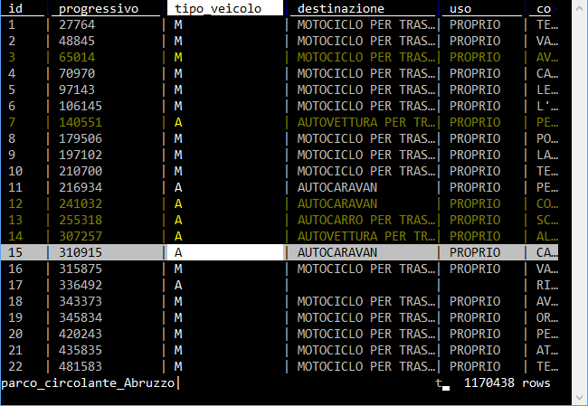
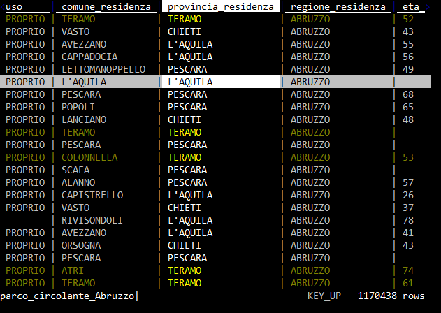
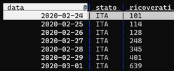

Lavorare sulle righe¶
La cosa più importante da comprendere è come selezionarle e deselezionarle, perché molte delle operazioni vengono eseguite proprio su quelle selezionate.
I tasti principali di selezione sono:
s, per selezionare la riga corrente;u, per deselezionare la riga corrente;t, per invertire la selezione della riga corrente;gs, per selezionare tutte le righe;gu, per deselezionare tutte le righe;gt, per invertire i criteri di selezione per tutte le righe.

Selezione di righe tramite espressione regolare¶
| + termine da ricercare, seleziona tutte le righe in cui c'è corrispondenza per la colonna corrente;\ + termine da ricercare, deseleziona tutte le righe in cui c'è corrispondenza per la colonna corrente;g| + termine da ricercare, seleziona tutte le righe in cui c'è corrispondenza per una qualsiasi colonna;g\ + termine da ricercare, deseleziona tutte le righe in cui c'è corrispondenza per una qualsiasi colonna;,, dato il valore della cella selezionata, seleziona tutte le righe in cui per la colonna corrente c'è corrispondenza;g,, seleziona tutte le righe uguali a quelle corrente.
Ad esempio si apre questo file con VisiData:
- ci si sposta nella colonna
provincia_residenza - poi si pigia
|; - si digita
TERAMO; - si preme
Invio.
... si ottiene qualcosa come quella di sotto.

Selezione di righe tramite espressioni Python¶
È possibile fare una selezione di righe tramite un'espressione di Python (qui per approfondire sui concetti di base delle espressioni).
I comandi da tastiera sono:
z|, per selezionare tutte le righe in cui l'espressione è valida;z\, per deselezionare tutte le righe in cui l'espressione è valida.
Ad esempio se voglio selezionare da questo file tutte le righe relative a donne, la cui provincia di residenza è "Pescara", questi gli step:
gu, per deselezionare tutto;z|, per attivare la selezione tramite espressione Python;- scrivendo
provincia_residenza == "PESCARA" and sesso == "F"; - e pigiando su
Invio.
... verranno selezionati tutti gli elementi in cui la provincia è "Pescara" ed il sesso è "F".
Selezione di righe tramite espressioni Python e regex¶
- si digita
z|; - si scrive l'espressione, come ad esempio
re.search("^1", FieldB) and re.search("^2", FieldA), ovvero tutte le righe in cui il campoFieldBinizia per1e il campoFieldAper2.
Attenzione
Per utilizzare le espressioni regolari all'interno di una Python expression bisogna importare il modulo Python re. Qui le note per farlo.
Selezionare un numero random di righe¶
- aprire una tabella;
- fare click sulla barra spaziatrice ;
- scrivere
random-rows(si può scrivere anche soltanto ad esempiorane autocompletare con TAB ) e premere INVIO ; - scrivere il numero di righe random che si vogliono selezionare.
Spostare righe¶
Si fa con queste combinazioni:
Shift+j, per spostare la riga corrente verso il basso;Shift+k, per spostare la riga corrente verso l'alto.
Cancellare righe¶
- D per cancellare la riga corrente;
- G + D per cancellare le righe selezionate.
Modificare il contenuto¶
Questi i comandi di base:
e, per modificare la cella corrente;Enter, per chiudere la modifica;Control+c, per cancellare la modifica;Control+a, per andare a inizio linea;Control+e, per andare a fine linea;Control+k, per cancellare il contenuto a partire dalla posizione del cursore.
Ordinare e filtrare¶
Ordinare righe¶
I tasti [ e ] ordinano i dati rispettivamente in modo crescente e decrescente, a partire dalla colonna attiva.
Filtrare righe¶
È possibile estrarre in vari modi un campione delle righe della tabella visualizzata. Quello di base è a partire dalla selezione delle righe (in uno dei modi visti sopra) e poi pigiare ". Ad esempio si naviga sino alla colonna marca, si preme |, si scrive chevr, si pigia Invio (vengono selezionati tutti i record associati a CHEVROLET) e infine si preme ". Si avrà una tabella filtrata, con gli 8814 record relativi a questa marca per l'Abruzzo.
Oppure posso farlo a partire da un "foglio delle frequenze" (vedi qui):
- si naviga sino alla colonna
marca; - si pigia
Shift+f, che mi da in output il conteggio dei valori distinti per marca (sono più di un milione di record, ci vorrà un po' di tempo); - si scorre sino alla riga che contiene la marca che si vuole filtrare;
- si pigia
Invioe si avrà una tabella filtrata, con i record relativi a quella marca per l'Abruzzo.

Dal foglio delle frequenze è possibile filtrare su più di un elemento:
- si selezionano ad esempio tre marche, pigiando
sper ognuna; - si chiude il foglio delle frequenze con
qe si torna al foglio dati; - si pigia
"e si ottiene una tabella filtrata con i dati relativi alle sole tre marche selezionate prima.
Filtro tramite espressione Python¶
È possibile filtrare righe tramite un'espressione Python (qui la documentazione ufficiale e qui una guida che consiglio).
Se ad esempio dalla tabella di sotto si volessero soltanto le province con più di 350.000 abitanti
basterebbe:
- per prima cosa impostare il campo
Popolazionecome numerico, pigiando #; - pigiare
z|per attivare il filtro tramite espressione Python; - scrivere l'espressione basata sulla colonna, che qui è
Popolazione>350000e poi premere INVIO.
In output si avrà la selezione di tutte le righe che risolvono l'espressione scritta.

Note:
- nel filtro per espressione c'è l'autocompletamento del nome colonna, quindi se si scrive ad esempio
Pope poi si fa click su TAB, viene restituito a schermoPopolazione; - è possibile scrivere espressioni complesse, che fanno riferimento a più colonne.
Filtro tramite espressione Python su campo datetime¶
È possibile filtrare righe tramite un'espressione Python a partire da campi datetime, dopo averli impostare come data.
Usando questo file CSV (by PCM-DPC), se ad esempio dalla tabella di sotto si volessero soltanto i record con giorno 29:

basterebbe:
- per prima cosa impostare il campo
datacome data, pigiando @; - pigiare
z|per attivare il filtro tramite espressione Python; - scrivere l'espressione basata sulla colonna, che qui è
data.day == 29e poi premere INVIO.
In output si avrà la selezione di tutte le righe che risolvono l'espressione scritta.

Osservazioni: oltre a day è possibile usare: month, yeare hour
Se si vogliono ad esempio selezionare soltanto righe con date nel futuro, l'espressione sarà data > datetime.datetime.now().
Filtri tramite espressione python, basata su più colonne¶
Si vogliono ad esempio selezionare tutte le righe in cui il domicilio non è né a Palermo, né a Ragusa, ma la cui residenza è in una di queste due città.
A partire ad esempio da:
| domicilio | residenza |
|---|---|
| PA | PA |
| RG | RG |
| TO | TO |
| VE | PA |
Questa la procedura:
- pigiare
z|per selezionare tramite espressione Python; - scrivere
re.search("^(?!PA|RG).*", domicilio) and re.search("(PA|RG)", residenza); - premere INVIO.
La prima è una speciale condizione di regex, che cerca al negativo.
Sarà selezionata soltanto la riga seguente:
| domicilio | residenza |
|---|---|
| VE | PA |
Attenzione
Questa espressione sfrutta il modulo re di Python, che non è importato by default in VisiData. Quindi dovrai aggiungere l'istruzione di import nel file di configurazione.